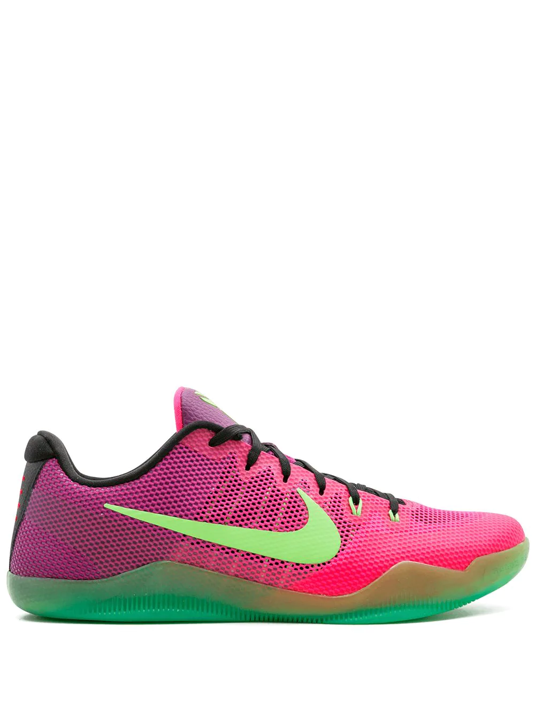

Kobe 10 Elite Low sneakers
Supplied by a premier sneaker marketplace dealing with unworn, already sold out, in demand rarities. Each product is rigorously inspected by experienced experts guaranteeing authenticity. Are you ready to run? Simply lace up these black, wolf grey and pink mesh Kobe 10 Elite Low sneakers from Nike and get ready to set off. Hit the ground in style. Featuring a lace-up front fastening, a big embossed tongue, a signature Nike swoosh, a round toe and a ridged rubber sole.
Pink Kobe Xi sneakers
Nearly fifty years after its conception in 1971, Nike’s iconic Swoosh logo remains unchanged, showcasing a prevalent and pioneering symbol for the brand. Update your footwear arsenal with these pink leather Kobe XI sneakers. Featuring a round toe, a mesh upper, a lace-up front fastening, a signature Nike swoosh and a rubber sole. These styles are supplied by a premium sneaker and street wear marketplace. Stocking only the most sought-after footwear and clothing, they source and curate some of the most hard-to-find items from around the world.
Kobe 4 Protro sneakers
 Supplied by a premier sneaker marketplace dealing with unworn, already sold out, in demand rarities. Each product is rigorously inspected by experienced experts guaranteeing authenticity. The Undefeated x Nike Kobe 4 Protro PE “DeMar DeRozan” is an exclusive colorway made for San Antonio Spurs guard DeMar DeRozan. The former USC basketball star is one of four Team Kobe members to receive a makeover specific to his team’s uniform colors in conjunction with Undefeated’s collaboration with Nike Basketball on the Kobe 4.
Using retro Spurs colors as the inspiration behind the design, the base features a teal Flywire mid-panel base with a mango outlined black Swoosh on top. A teal patent leather covers the toe, ankle collar, and heel. Bright mango accents are found on the sock-liner, as well as on the dual-branded tongues featuring both Undefeated and Kobe logos. The numbers “8” and “24” that Bryant wore during his time as a Laker, appear in orange on the heel. Completing the low-top silhouette is a semi-translucent orange and white outsole.
The Undefeated x Nike Kobe 4 Protro PE “DeMar DeRozan” was released on August 24th, 2019.
Supplied by a premier sneaker marketplace dealing with unworn, already sold out, in demand rarities. Each product is rigorously inspected by experienced experts guaranteeing authenticity. The Undefeated x Nike Kobe 4 Protro PE “DeMar DeRozan” is an exclusive colorway made for San Antonio Spurs guard DeMar DeRozan. The former USC basketball star is one of four Team Kobe members to receive a makeover specific to his team’s uniform colors in conjunction with Undefeated’s collaboration with Nike Basketball on the Kobe 4.
Using retro Spurs colors as the inspiration behind the design, the base features a teal Flywire mid-panel base with a mango outlined black Swoosh on top. A teal patent leather covers the toe, ankle collar, and heel. Bright mango accents are found on the sock-liner, as well as on the dual-branded tongues featuring both Undefeated and Kobe logos. The numbers “8” and “24” that Bryant wore during his time as a Laker, appear in orange on the heel. Completing the low-top silhouette is a semi-translucent orange and white outsole.
The Undefeated x Nike Kobe 4 Protro PE “DeMar DeRozan” was released on August 24th, 2019.